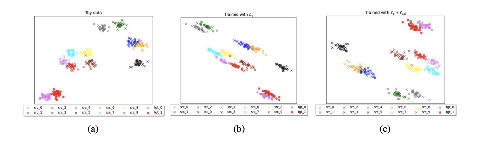
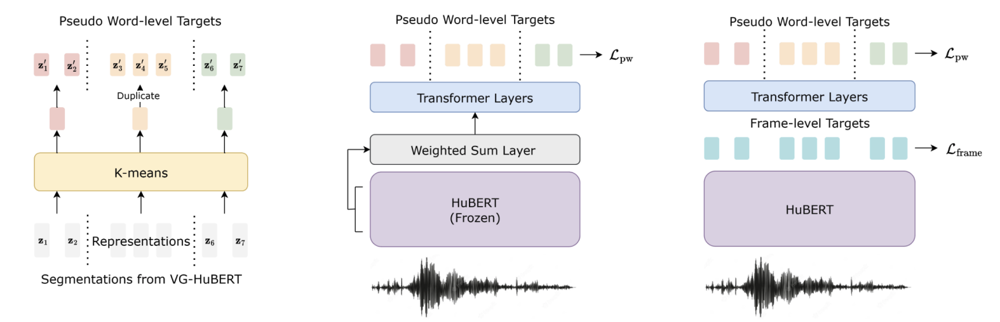
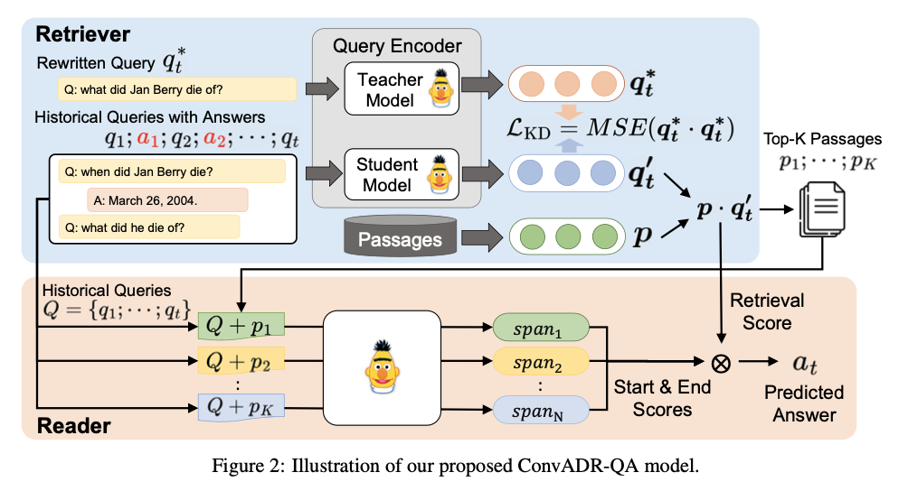
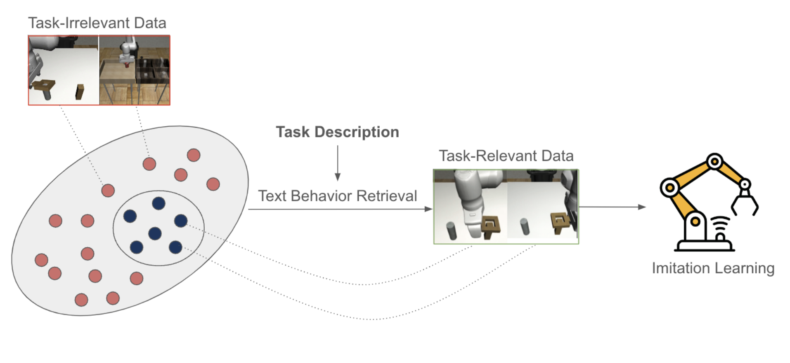

|
Hung-Chieh (Oscar) Fang I am a senior undergraduate majoring in Computer Science at National Taiwan University, where I am fortunate to be advised by Professors Hsuan-Tien Lin, Yun-Nung (Vivian) Chen and Hung-yi Lee. Email / CV / Google Scholar / Github / Linkedin |
{kind=link}
ResearchI am broadly interested in robust machine learning and robotics. Specifically, I aim to explore how to enable robots to learn and adapt in dynamic environments. |
|

|
Reducing Source-Private Bias in Extreme Universal Domain Adaptation
Hung-Chieh Fang, Po-Yi Lu, Hsuan-Tien Lin Preprint. Under Review. paper We identify the unsolved Extreme UniDA sub-task, highlighting the limitations of existing partial domain alignment paradigms. We propose using self-supervised loss to reduce source-private bias and improve robustness across scenarios. |
|

|
Integrating Self-supervised Speech Model with Pseudo Word-level Targets from Visually-grounded Speech Model
Hung-Chieh Fang*, Nai-Xuan Ye*, Yi-Jen Shih, Puyuan Peng, Hsuan-Fu Wang, Layne Berry, Hung-yi Lee, David Harwath ICASSP 2024 workshop: Self-supervision in Audio, Speech and Beyond paper We propose using vision as a surrogate for paired transcripts to enrich the semantic information in self-supervised speech models. |
|

|
Open-domain Conversational Question Answering with Historical Answers
Hung-Chieh Fang*, Kuo-Han Hung*, Chao-Wei Huang, Yun-Nung Chen AACL-IJCNLP 2022 paper / code We propose combining the signal from historical answers with the noise-reduction ability of knowledge distillation to improve information retrieval and question answering. |
Projects |
|

|
Zero-shot Text Behavior Retrieval
Hung-Chieh Fang*, Kuo-Han Hung*, Nai-Xuan Ye*, Shao-Syuan Huang* Course Project of "Reinforcement Learning", Spring 2023 paper We propose a method for retrieving task-relevant data for imitation learning without requiring expert demonstrations. Our approach leverages text descriptions in combination with a vision-language model to enable zero-shot behavior retrieval. |
Teaching |
|
|
Teaching Assistant, EE5100: Introduction to Generative Artificial Intelligence, Summer 2024
Teaching Assistant, CSIE5043: Machine Learning, Summer 2023 |
|
This template is adapted from here. |